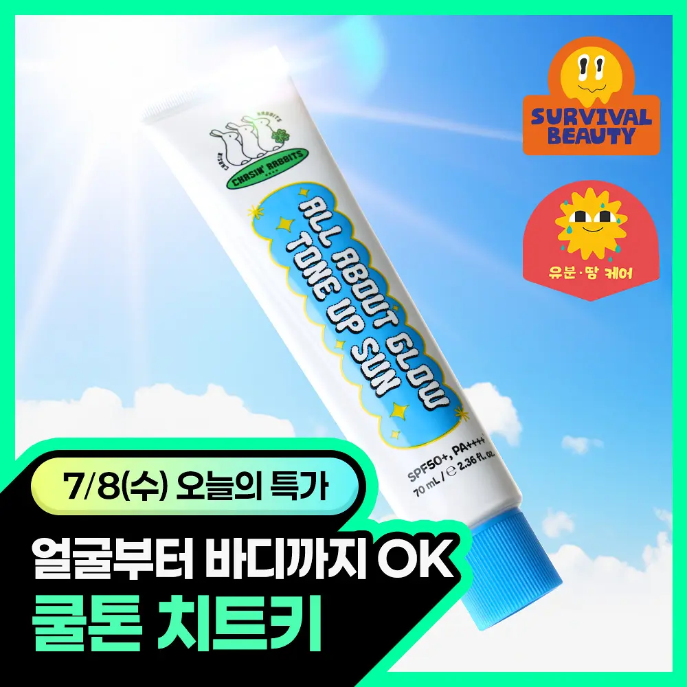
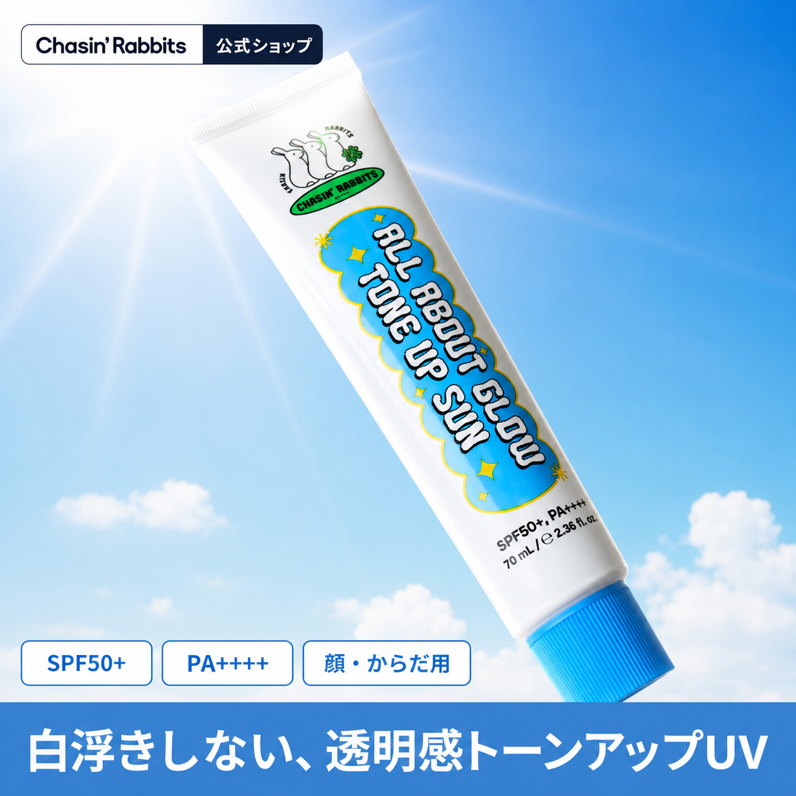

블록 0품의용 요약 표지
일본 시장 진입 진단 리포트
HARUON(하루온)
CICA 진정 앰플 · 스킨케어 / スキンケア
한계: 薬機法 판정은 1차 스크리닝(법률 자문 아님) · 코퍼스는 楽天 skincare 90건 단일 채널 표본 · 리뷰 서사는 카테고리 일반형
이 한 장만 결재자에게 전달해도 “무엇을·얼마에·어디까지” 진단했는지 확인된다.
(2026-07-16: 검수자 행 삭제 — 검수 단계 제거)
블록 1진단 요약 — 일본 상세 관례 충족도
18
/ 100
- 채점 기준 공개
- 楽天 skincare 90건 코퍼스 기준
- 薬機法 1차 스크리닝
종합점수는 성과 예측이 아니라 “일본 상세 관례 충족도”입니다.
최우선 재설계 Top 3
B 무첨가·안전 소구
敏感肌 소구의 일본 핵심 문법이 하나도 없음 — 탐색 단계 이탈의 관문
A 신뢰 구축
効能評価試験·※각주·集計日 전무 — 주장은 있는데 근거 장치가 없음
E 카테고리 적합성
등급 판단 없이 의약외품·의약품 영역 표현 다수
블록 2일본향 타깃 페르소나 · 구매여정 · USP 재정의
ゆらぎ肌に疲れた 나오(仮) · 26–34세 회사원 여성 · 가상 인물
- 피부 고민
- 肌荒れ, 乾燥, ゆらぎ(불안정)
- 구매 동기
- 계절 변화·마스크·수면 부족으로 반복되는 컨디션 난조
- 가격 감도
- 중간 — 근거가 있으면 지불, 과장에는 학습된 경계심
- 신뢰 트리거
- 効能評価試験済み · 배합률 명기 · 集計日 있는 제3자 지표
- 구매 전 확인
- @cosme 口コミ 평점·件数 · 敏感肌 후기 검색 · 成分 확인
구매 여정 — 최종 확신은 상세페이지의 “안심 근거”에서 생긴다
1 · 인지
Instagram / TikTok
리뷰어의 “使ってみた”에서 존재를 인지
2 · 탐색
@cosme · 口コミ · 랭킹
敏感肌 후기·成分 확인. 과장 카피는 여기서 감점
3 · 구매 = 최종 확신 지점
楽天 / Qoo10 상세페이지
成分·配合率·無添加·効能評価를 마지막으로 확인하고 결제
구매 반대 이유 (첫 의문)
鎮静って言うけど、化粧品でそんな効果出るの?
과장 의심 — 효능 단정에 대한 학습된 경계심
私の敏感肌に刺激ないの? 何が入ってて、何が入ってないの?
무첨가·자극 정보 요구 — B군 부재가 정확히 이 질문을 방치한다
日本で売ってる韓国コスメ、口コミ本当?
제3자 근거 요구 — 集計日 없는 실적은 오히려 불신을 키운다
USP 재정의 표
| 현재(KR) 소구 | 일본 고객에게 읽히는 방식 | 재정의된 구매이유(USP) | 실행 문장 |
|---|---|---|---|
| 즉각 진정 · 트러블 싹 (K3·K10) | 化粧品でそんな効果出るの? — 학습된 경계심 자극. 薬機法 표현 불가 | ゆらぎがちな肌を、うるおいで整える — 억제가 아니라 정돈. 효능 56항목 안에서 진정 니즈를 흡수 | 블록 7 K3·K10 |
| 99% 고농축 · 병원 처방급 (K7·K8) | 何の99%? 病院と比べて大丈夫? — 수치 근거 불명확 + 의료 비교 | 정확한 배합률 + 기전으로 말하는 성분 신뢰 — 작아도 정확한 수치가 큰 숫자보다 강하다 | 블록 7 K7 |
| 10만 병 완판 · 리뷰 난리 (K6) | 集計日は? 口コミ本当? — 출처 없는 실적은 반대 이유를 키움 | 검증 가능한 지표로 쌓는 신뢰 — 累計出荷 + 集計時点 명기 | 블록 7 K6 |
| (부재) 무첨가·안전 소구 없음 | 敏感肌 고객이 가장 먼저 찾는 정보에 답이 없음 = 탐색 단계 이탈 | 敏感肌の毎日に、無添加という安心 — B군 0점을 신뢰 자산으로 전환 | 블록 8 신뢰 블록 |
블록 3薬機法 표현 전수 감사 (1차 스크리닝)
HARUON 앰플은 별도 승인 문구가 없으므로 「化粧品」으로 상정해 감사한다. 향후 医薬部外品 승인을 받으면 일부 표현이 조건부로 열린다.
| 등급 | 말할 수 있는 것 | 말할 수 없는 것 |
|---|---|---|
| 化粧品 | 厚労省 고시 “화장품 효능효과 56항목” 범위 내 (肌にうるおいを与える, 肌を整える) | 56항목 밖 전부. 鎮静·再生·治療·深部浸透 |
| 医薬部外品(薬用) | 개별 승인된 효능 (美白, にきびを防ぐ, 殺菌) | 승인·유효성분 없으면 사용 불가 |
| 医薬品 | 治療·改善·再生 | 앰플은 이 등급에 해당 불가 |
손상된 피부 장벽을 재생시켜 근본부터 치료합니다
「再生」「修復」「治療」는 전형적 의약품적 효능 표현. 화장품·의약외품 어느 등급으로도 불가.
합법 대체표현 うるおいのヴェールで肌を包み、乾燥に負けないなめらかな肌へ。
피부 속 깊은 곳까지 파고드는 시카(CICA) 앰플
침투 표현은 角質層까지로 한정해야 함. “깊은 곳”은 真皮 침투 암시로 불가. 각층 한정 + ※각주면 가능.
합법 대체표현 角層のすみずみ※まで、うるおいで満たすCICAアンプル。 ※角質層まで
출시 3개월 만에 10만 병 완판, 다들 리뷰가 미쳤다고 난리 났어요
판매 실적은 사실이면 표기 가능. 단 집계 시점·출처 명기 필요. “미쳤다”류 煽り는 일본 상세 관례와 불일치.
합법 대체표현 おかげさまで、累計出荷10万本を突破しました。 ※2026年◯月時点・自社出荷実績
⋯ K1 · K3 · K5 · K7 · K8 · K9 · K10 · K11 동일 형식으로 이어짐 (총 11장)
본 감사는 공개 규정 기반 1차 스크리닝이며 법적 확정 판정이 아닙니다. 실제 표시·광고의 최종 적법성은 배합 성분·승인 구분·문맥 전체에 따라 달라지며, 상장(上市) 전 약무 전문가·행정 확인을 권고합니다.
블록 4카테고리 경쟁 벤치마크 (코퍼스 90건 실측)
표본은 detail-ocr.jsonl 중 skincare 90건(楽天 상세 OCR)이다.
아래 인용은 전부 이 표본의 실제 일본어 원문이며, 과잉일반화가 아니라
“이 표본에서 관찰된다”는 관찰이다.
| 신뢰 장치 | 일본 상위 제품 실제 표현 | 내 콘텐츠 | 갭 |
|---|---|---|---|
| 효능 근거 라벨 | 効能評価試験済み | ✕미관찰 | A1 미탑재. 효능을 근거 없이 형용사로 단정 |
| 조건 각주 ※ | ※角層まで / ＊朝と夜お使いの場合 | ✕미관찰 | A2 미탑재. 스스로 범위를 좁히는 절제 부재 |
| 성분 배합률 | グリシルグリシン 6% | △부분 | D1 誤認 리스크. “99%”는 무엇의 비율인지 불명확 |
| 제3자 지표+집계일 | 週間ランキング1位（集計日：5/11〜5/17） | ✕미관찰 | A4 미탑재. “10만 병 완판”은 집계일·출처 없음 |
| 무첨가/프리 라벨 | 合成香料フリー / 無香料・無着色 (코퍼스 54건) | ✕미관찰 | B1·B2 완전 미탑재. 敏感肌 소구의 일본 핵심 문법 결여 |
| 성분 검색표기 | CICA（ツボクサエキス） | △부분 | D4 부분. 병기로 검색 노출 강화 여지 |
○관찰됨 △부분 ✕미관찰 일본 상세 관례의 ○△✕ 표기를 그대로 쓴다
- 효능 근거 라벨: 「乾燥小じわ※ … ※乾燥による小じわを目立たなくする（効能評価試験済み）」
- 조건 각주: 「＊2 角層まで／＊5 朝と夜お使いの場合」
- 제3자 지표+집계일: 「週間ランキング1位（集計日：5月11日〜5月17日）」「レビュー(2,375件)」
일본 검색·고민 어휘 (빈도 실측 · 라쿠텐 skincare 표본)
“진정(鎮静)”은 한국에선 최강 소구어지만 일본에선 화장품 효능도 아니고 검색어로도 약하다. 같은 니즈를 肌荒れ·敏感肌·ゆらぎ肌·整える로 검색한다.
블록 5일본 문법 진단 점수 (A~E 루브릭)
A1 효능 근거 라벨(効能評価試験済み 등) 탑재 0점
- 통과 기준
- 효능 주장에 効能評価試験済み 등 검증 라벨이 병기되어 있다
- 내 문장
- (해당 표현 미관찰)
- 코퍼스 근거
- アスタリフト 化粧水 — 乾燥小じわ※（効能評価試験済み）
A2 조건 각주(※/＊)로 주장 범위를 한정 0점
- 통과 기준
- 침투·지속·효과 주장에 범위를 좁히는 각주가 붙어 있다
- 내 문장
- 피부 속 깊은 곳까지 파고드는 시카(CICA) 앰플
- 코퍼스 근거
- ＊2 角層まで / ＊5 朝と夜お使いの場合
C1 문제 제기·공감 도입부 1점
- 통과 기준
- こんな経験していませんか？형 문제 제기로 시작해 원인까지 잇는다
- 내 문장
- 예민해진 피부, 병원 안 가도 되는 진정의 답
- 코퍼스 근거
- 문제 제기는 있으나 원인·근거 축 없이 즉효 단정으로 직행 (부분 충족)
E4 skincare — 등급 판단·効能評価 근거 축 0점
- 통과 기준
- 화장품/의약외품 등급 내 표현만 사용하고 근거 축을 갖춘다
- 내 문장
- 손상된 피부 장벽을 재생시켜 근본부터 치료합니다
- 코퍼스 근거
- idio CICA 化粧水 — 肌が敏感な方でも肌荒れを防ぎながら
⋯ A3~A5 · B1~B2 · C2~C3 · D1~D4 동일 형식으로 이어짐
E군은 제품 카테고리에 해당하는 항목만 채점한다. skincare이므로 E4만 채점하고 E1(suncare)·E2(makeup)·E3(cleansing)은 분모에서도 제외한다. 집계·가중은 코드가 하므로 같은 항목 점수 → 같은 종합 점수다.
블록 6리뷰(口コミ) 인과 서사 — 카테고리 일반형
이 서사는 카테고리 일반형입니다. 개별 리뷰를 크롤링하지 않으며, 가짜 리뷰·가짜 평점·가짜 인용을 생성하지 않습니다. 위는 코퍼스의 skincare 리뷰 어휘에서 자주 관찰되는 우려 유형입니다. 리뷰 페이지 URL을 넣으면 이 제품 실측 리뷰로 정밀화됩니다(v2).
블록 7NG/OK 재작성 (Before/After + 한국어 병기)
재작성 1 · 근거 K3 · 薬機法【불가】 · 루브릭 C3 · USP U1 실행
트러블 싹, 붉은기 싹 — 바르는 순간 즉각 진정
乾燥による肌あれ※が気になる肌を、うるおいでキメ整える。 ※角層
“건조로 거칠어지기 쉬운 피부를, 수분으로 결을 정돈한다” — ‘없앤다’가 아니라 ‘정돈한다’로. ※는 각질층 범위 안이라는 자기 한정 각주.
문제: 「トラブルを消す」=효과 보증·의약품적, 「赤み를 없앤다」=염증 개선 암시, 「즉각」=근거 없는 즉효 단정. 효과 보증을 삭제하고 「整える」(효능 56항목 내)로 치환 — 페르소나의 반대 이유 ①을 자극하지 않는다.
재작성 2 · 근거 K4 · 薬機法【불가·최고위험】 · USP U1 실행
손상된 피부 장벽을 재생시켜 근본부터 치료합니다
うるおいのヴェールで包み、乾燥に負けないなめらかな肌へ導く。
“수분의 베일로 감싸, 건조에 지지 않는 매끄러운 피부로 이끈다” — ‘재생·치료’라는 결과 단정을 지우고 ‘이끈다(導く)’는 완화된 결과 표현으로.
문제: 「再生」「修復」「治療」는 전형적 의약품적 효능 표현 — 어느 등급으로도 불가. 결과를 「導く」로 완화한 것이 일본 상세의 관례적 절제다.
⋯ K5 · K10 · K11 재작성 이어짐 (총 5쌍)
After는 실측 코퍼스 표현·렉시콘 근거로만 작성한다. 가짜 수치·가짜 인증 삽입은 금지다. 번역 산출물이 아니라 정보 구조 재설계다.
블록 8비포&애프터 샘플 (한 블록 통째 재구성)
대상 섹션: 헤드라인 블록 (K1·K2 · 최저점 A·B군)
병원 안 가도 되는 진정의 답 / 피부 속 깊은 곳까지 파고드는 시카 앰플
ゆらぎがちな肌※1に、うるおいという選択を。
角層のすみずみ※2まで満たす、CICA(ツボクサエキス)アンプル。
※1 季節や乾燥によるコンディションの変化 ※2 角質層まで
“불안정해지기 쉬운 피부에, 수분이라는 선택을. / 각질층 구석구석까지 채우는 CICA(병풀 추출물) 앰플.”
왜 이렇게 바꿨나
- 「病院」비교(K1)·「深部浸透」(K2)를 삭제하고 각층 한정 ※각주로 재설계
- 즉효 단정 대신 공감(흔들리는 피부) → 약속(수분) 구조 (루브릭 C1)
- 성분명을 CICA(ツボクサエキス)로 병기 (루브릭 D4 · 검색표기)
고객 콘텐츠가 빈약해 데모로 대체한 경우 예시(데모) 배지가 붙는다. 실물 브랜드 사칭·익명 성공 사례는 생성하지 않는다.
블록 9맺음 · 규정 출처 · 한계 · 다음 단계
지금 할 일 (위험 순)
K4·K9의 “재생·치료”를 오늘 내리세요. 의약품적 효능 표현으로 최고위험입니다
K2의 침투 표현을 角層 한정 + ※각주로 좁히세요
K6의 실적에 집계 시점·출처를 붙이거나 내리세요
없어서 손해 보는 것: 무첨가·프리 처방 라벨(B군 0점). 敏感肌 구매의 관문입니다
규정 출처
한계 고지
- 薬機法 판정은 공개 규정 기반 1차 스크리닝이며 법률 자문이 아니다. 상장 전 전문가 확인 권고
- 코퍼스는 楽天 단일 채널 표본(skincare 90건)으로 채널 편중·OCR 노이즈가 있다
- 리뷰 서사는 카테고리 일반형이며 개별 리뷰를 크롤링하지 않았다
- 인용은 분석 목적의 소량 인용이며 재배포하지 않는다
다음 단계 — 고정가 (견적 왕복 없음)
① 진단 리포트
30만 원
지금 받으신 문서. 1건 고정가
② 마케팅 스튜디오
월 20만 원
첫 달 진단비 30만 원 공제 · 일본향 콘텐츠 제작
③ 운영
② 구독 내 확장
진단만 받고 끝내도 됩니다
대행이 아니라 사전 진단 → 실행 지원입니다. 물류·통관·인허가·광고 집행은 하지 않습니다.
리포트는 여기까지. 다음은 직접 만들어 볼 차례입니다
② 마케팅 스튜디오가 하는 일 — 실물 재설계 예시
번역이 아니라 일본 고객 관점으로 다시 설계합니다. 아래는 한 선케어 브랜드의 한국 판촉 이미지를 일본향으로 재구성한 예시입니다.

특가·‘쿨톤 치트키’ 밈 카피·형광 테두리·효능 인접 배지 — 한국 판촉 문법.

白浮きしない、透明感トーンアップUV
SPF50+ ・ PA++++ ・ 顔・からだ用
가격·밈·과장 배지를 걷어내고, 일본 소비자가 신뢰하는 스펙(SPF·PA·용도)과 ‘백탁 없음’ 효용 중심으로 재설계.
무엇을 바꿨나
- 형광 그린 테두리 → 제거 (라쿠텐 테두리 관례 금지)
- “7/8 오늘의 특가” 가격 요소 → 제거
- “쿨톤 치트키”(밈) → 재설계: 白浮きしない、透明感トーンアップUV
- “얼굴부터 바디까지 OK” → 관례 표기 顔・からだ用
- “유분·땀 케어” 배지 → 근거 검수 전 미표기(제거)
- 하늘·구름 배경 → 유지·정제 (브랜드 자산 + 일본 선케어 무드)
예시 골든 픽스처(예시)입니다. 실물 브랜드 사칭이나 근거 없는 실적은 넣지 않습니다.
지금 본 재설계를, 당신 브랜드로 직접.
가입하면 마케팅 스튜디오를 결제 전에 무료로 써볼 수 있는 크레딧을 드립니다. 예시가 아니라 당신의 상세·썸네일·피드를 일본향으로 재설계해 보세요.
가입하고 크레딧 받기고정가는 그대로입니다 — 크레딧은 스튜디오 무료 체험용이고, 구독·결제는 체험한 뒤 결정하세요.